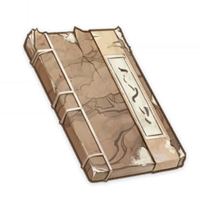

Onibudou¶

Note
A standalone volume from the light novel series "Onibudou," written by Junkichi, a writer with Yae Publishing House. This collection contains the first two major arcs in the story. The quality of the serialized version varies quite a bit, but it still enjoys a degree of popularity amongst readers.
Arayama City Arc: Chapter 1¶
It was that same nightmare again, forcing Yutaka Riko to relive the night when the oni race was destroyed.
The dark clouds roared as they closed in, swallowing the village whole. The ink-like flames raged and spread, devouring hundreds of houses all the way to the seaside, causing the seawater to steam and churn, and turning the sand on the shallows into a molten slurry.
The chieftain shoved Riko into an underground cellar. The last words she heard still rang in her ears, drowning out the cries of anguish all around.
"Kataba Shintetsu has betrayed the oni. It was she who brought about this disaster!"
Riko's swordsmanship was taught to her by Shintetsu personally. As far as she could remember, Shintetsu was a demure girl who always wore a faint smile as she talked to others.
Until today, Riko still could not accept that her teacher, the sword prodigy respected by all, could have done something so cruel.
But yet the symbols and talismans scattered around the village made a convincing counterpoint. The chieftain could not have been mistaken...
How should she face Shintetsu?
Riko had not yet decided, and could only sigh deeply.
The noise startled a nearby white cat, and squinting its two mottled eyes, the cat rubbed the back of Riko's hand.
"Sorry, Onigiri. Did I wake you?"
Riko brought her wooden bowl out and placed it before the cat. Listening to the soft sounds of it lapping at the water, she looked up at the sky outside her tent.
Through the gaps in the leaves could the cliffs and mountains under the moonlight be seen, its silver glow tracing the intricate outlines of buildings on the ridges, forming a unique spectacle.
Arayama City lay before her. The towering mountains had all been hollowed out, with a majestic city being built within them. Legend had it that the "people of the mountain" here were the descendants of giants, standing at two times the height of an ordinary person. Even the plants and crops here were larger than anything elsewhere. Moreover, Arayama City's "Arahara Army" was said to be powerful indeed, having fought with the surrounding nations many times while suffering very few defeats.
But Arayama City's brutal lord was not satisfied, and would not be till he had achieved absolute dominion.
Three days ago, the lord had invited Kataba Shintetsu to join the Arahara Army and train his troops in the swordsmanship that the oni had prided themselves in. Shintetsu had agreed gladly...
But regardless of Shintetsu's intentions, Riko's current goal was to find her, defeat her, and mete out the punishment she deserved.
Then, she would follow the clues that the chieftain had given her to search for the true teachings of "Shiseidou," and use the magatama within Onigiri's body to revive her tribespeople.
Thinking thus, Riko put a little more wood on the fire before lying down her side and entering a shallow slumber, preserving her strength for the battle that would commence the next day.
...
Arayama City Arc: Chapter 15¶
The standoff had been broken.
The burly commander stood about a hundred paces off, observing the battle personally and executing several deserters. These deeds had the remarkable effect of calming the Arahara Army and steadying their formation. No one dared speak of the assassination of their lord now.
"What are you afraid of? That little brat doesn't even come up to a Lavender Melon's height. Get her!"
The troops looked at each other until forced by their commander's enraged roar to charge at Riko.
Riko heard it, of course. The hand that wielded her sword trembled, and Onigiri, hidden within her hood, mewled softly in fear.
Well, I'm sorry that we oni lived on a deserted island and didn't get an opportunity to grow tall, and thus aren't fit to be your opponents.
But a "fit" has got nothing to do with my ability to defeat you.
Spinning on one tipped toe, Riko let fly her blade with a transient flash of crimson red. Light arced across the battlefield, piercing through the commander's torso.
"Kissaki Yousen."
This was the same special sword technique that the wandering spirit of the previous lord of the city had imparted to Riko — a fatal blade that utterly ignored all distances in battle.
With a terrible, clean crack, the enemy commander's sword split in two, and he fell forward with an inaudible murmur, dead.
Seeing their general go down, the Arahara Army stopped dead in its tracks. Not a single soldier dared to go a step further. Indeed, their formation fell into chaos swiftly thereafter, melting away utterly.
Thus did Arayama City fall, and thus did the people who had long been oppressed rise up and take the lord's mansion, seizing back all that had once belonged to them.
Yet through all this, Kataba Shintetsu did not show her face.
Sheathing her sword, Riko realized that something was off, glancing upward towards the distant mountain peak.
There stood Shintetsu upon Arayama City's greatest height, atop its blazing tower, watching the whole battle. Her face was shrouded in shadow, her expression unreadable.
The two women locked gazes for an instant, and then with a leap, Shintetsu was gone.
Kataba Shintetsu... Why had she come here? She had accepted the invitation of the lord of this city, only to turn around and assassinate him...
Did she still have some good left in her?
Riko shook her head. Now was not the time for excess thoughts. Comforting Onigiri, she quickly ran towards Arayama City.
If she did not continue her pursuit in all haste, Shintetsu was sure to leave her far behind.
...
Ryuutetsu Cage Arc: Chapter 1¶
She had gotten careless. This encampment was nothing but a well-disguised trap.
Kataba Shintetsu had intentionally exposed her tracks, placing a large number of talismans amidst the camp, luring Yutaka Riko to pursue her. The moment Riko stepped into the camp, the talismans blew the mountainside clean away, and losing her footing, Riko plummeted into the chasm below...
The impact of the fall was not an issue, but Ryuutetsu Cage, which lay below in the depths of the mountain, was the greatest threat.
This chasm was once a pass separating two nations, and it was the site of a monstrous battle in which nearly a million people were slain. After the war ended, the two nations both sealed this area, pouring their destroyed weapons into this mountain rift. The souls of the unjustly slain warriors were trapped within the bloodied, broken metal, and as the shattered metal churned and turned, it would slowly evolve into the flowing metal sands seen today.
There was no clear distinction between solid ground and the metal dunes, and one could step out onto the sand and immediately sink into the mire, unable to escape as the churning metal sands had swallowed and ground one into dust. One wrong step, and there would be no going back. This strange iron sand even spread across the stone walls, making even the idea of escape by climbing out laughable in the extreme.
Only by slowly traversing the path at the bottom of the chasm could one have any hope of escape. But it was clear that no one had ever managed it. Those who fell into this cage may as well have been sentenced to death.
But Riko was like a woman unburdened. Here was undeniable proof that Kataba Shintetsu had long forsaken any mercy or goodness. Now, when she lifted her sword against her, Riko would not have to hesitate.
Not only this, but Shintetsu had underestimated the progress that Riko had made. This prison of metal sand would not hold her, for she had previously mastered the powerful ability named "Reppuu Tenshoku," which now came in handy.
But just as Riko was about to use that technique, she spied two small heads peeping around the corner of a rock face.
They were girls dressed in rags, their eyes gleaming with hope.
"Are you from the outside world?"
Riko nodded, retrieving Onigiri from her hood. It gave the two girls a limp greeting. The two girls took Riko to a mountain cave, and there she met their elders — a miserable group they were, having wound up in Ryuutetsu Cage by mistake.
"We've been stuck here for several months now. We've barely managed to get by on the grains on our cart, spring water, moss and wild vegetables..."
They were nine people and one cat. She had just enough strength to carry them all out on the woven wings of a gale.
Thus, she made this offer:
"How would you like to escape together with me?"
The old man who led the party kept his eyes on Riko's pale red horn, hesitation in his eyes.
"Warrior... If my eyes do not deceive me, you must be of oni descent, right?"
Unease flashed across Riko's heart.
"That's right, I am an oni. Is there a problem?"
...
Ryuutetsu Cage Arc: Chapter 14¶
Onigiri's tail, like a compass' needle, quivered for a moment before pointing forward and to the right. Yutaka Riko stepped forward tentatively — onto solid rock.
Good!
The chasm's exit was close at hand now. If she followed her present speed, she and Onigiri would escape Ryuutetsu Cage before dawn the next day.
"Well done, Onigiri."
Riko had never known till this day that Onigiri's spirit-sight could not only find wandering spirits that could help Riko master all manner of abilities but that it could also be used to steer clear of danger. The vengeful spirits of the Ryuutetsu Cage were unveiled in Onigiri's eyes as if in plain sight, allowing it to find a safe way through.
Perhaps this was the work of the magatama within Onigiri... Were her tribespeople watching over her?
Even so close to freedom and escape, Riko could not be pleased.
The words of those people buzzed in her ears, agitating and irritating her.
"Even if we starve here, I'll never trust an oni!"
What was with that? She was an oni, sure, but so what?
Everyone was kind, and they had lived peacefully and kept to themselves on their island. Why were they seen as the enemy?
Yet the gazes of those two children were too innocent, and Riko would not leave them to their fate. So she had left all her dry rations with them before using "Kagamichuu Shubutsu" to copy them several times, thus ensuring that they would have enough food to last another half a month.
She had memorized the entire route that she had taken as well. Once they departed, she would look for a nearby garrison and mark the safe route out for them. This way, the garrison would be able to rescue the trapped people.
Ah, this was so exhausting — worse than any battle she had experienced before.
Riko's eyes were dull as she petted Onigiri idly.
Sometimes, all we need is a scapegoat to pin our negativity on in order to bounce back.
As a hazy figure materialized before Riko's eyes, she muttered, irrepressible resentment in her voice,
"This is all your fault, Kataba Shintetsu..."
"Next time, I won't let you escape."
...